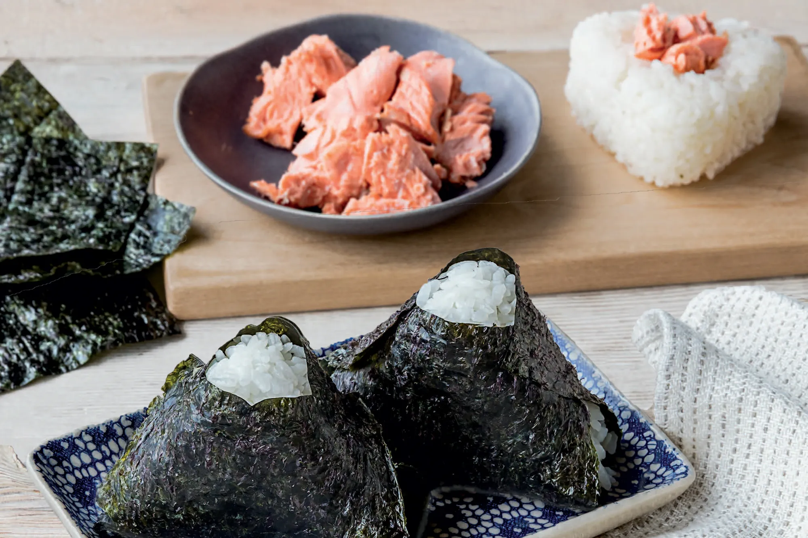

Pasta Alla Vodka

Great for a quick snack or even a meal. Let's learn how to make some jelly filled donuts(Brock hehe).
Ingredients
- 1/2 cup Cooked or Diced Sushi Grade Salmon
- 1 cup Cooked Sushi Rice
- 2 tablespoons Kewpie mayo
- 1 tablespoon sriracha
- 1 teaspoon soysauce
- Furikake
- Nori Sheets
Steps
- Add salmon into a bowl. Mix in Kewpie mayo, sriracha, and soy sauce. Sprinkle in some furikake.
- Wet hands to prevent rice from sticking. Get 1/4 cup of rice, take 2/3 of it and make an indentation.
- Add in 1 tablespoon of filling. Close with the remaining 1/3 of rice and form a ball.
- Carefully shape ball into a trianlge if you want. Wrap from the bottom to the middle of both sides with nori sheets
- Sprinkle furikake on top of exposed rice and serve!